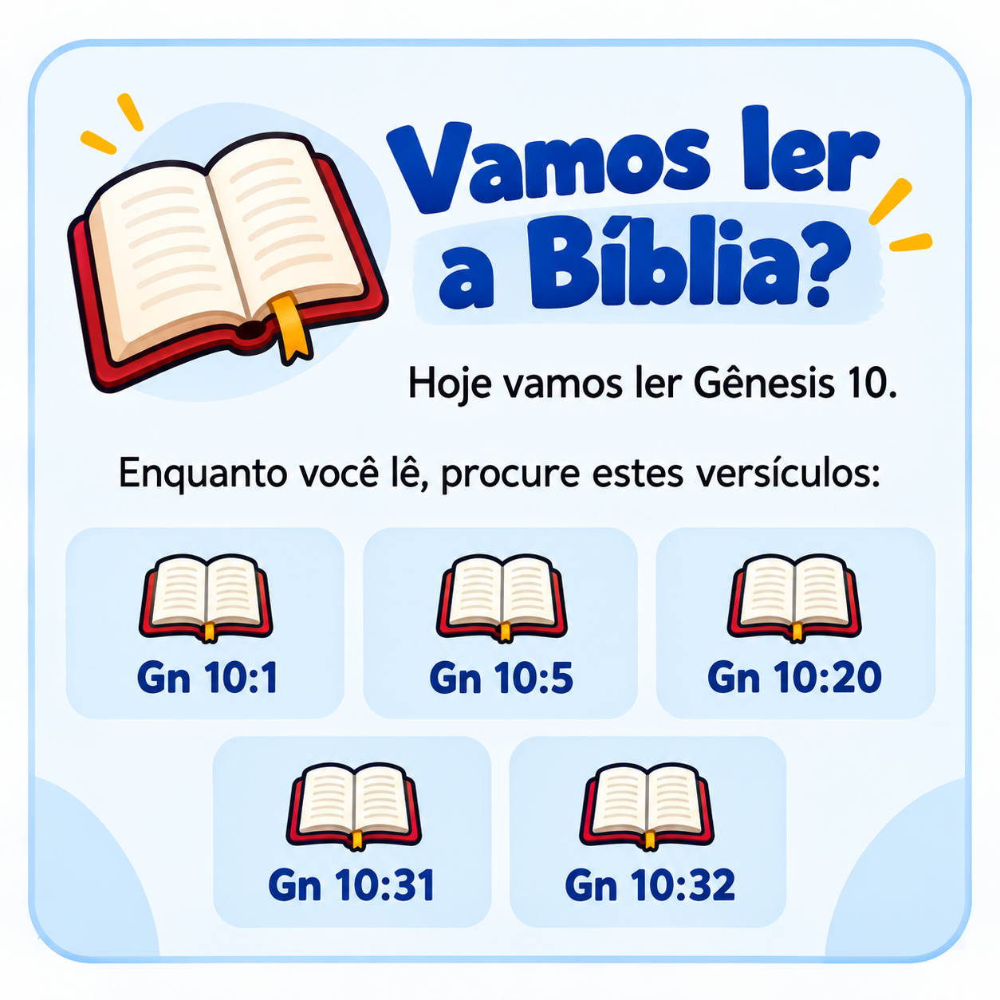
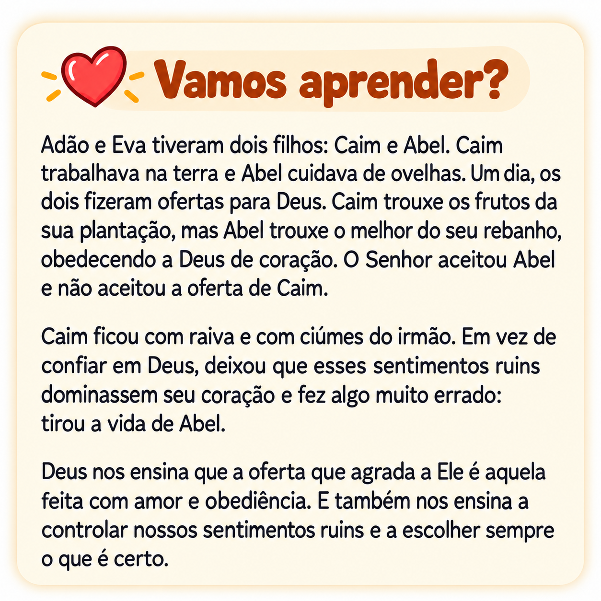
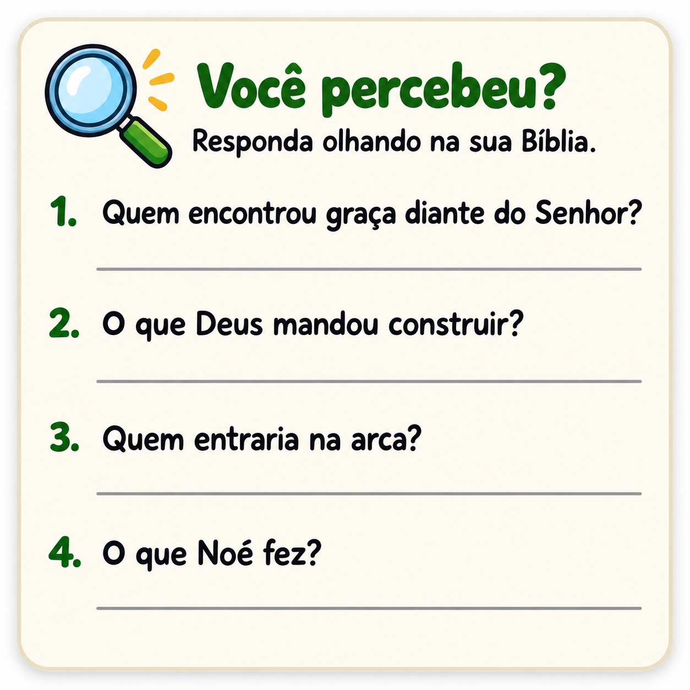
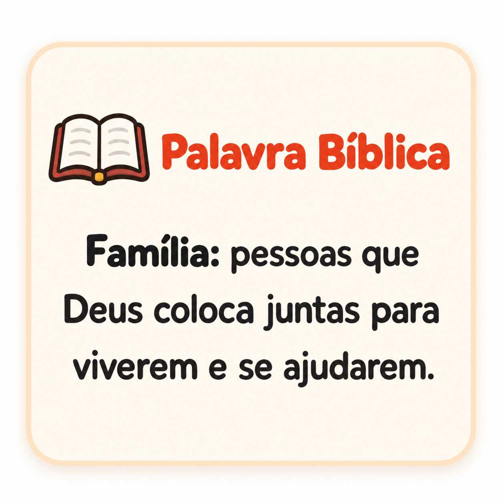
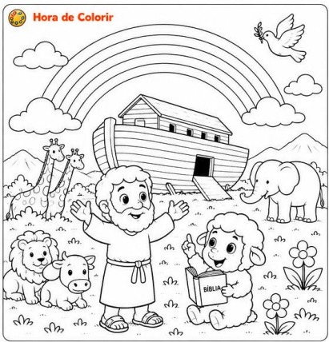
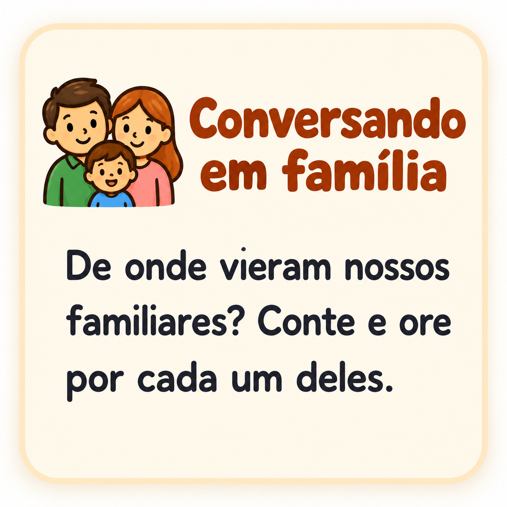
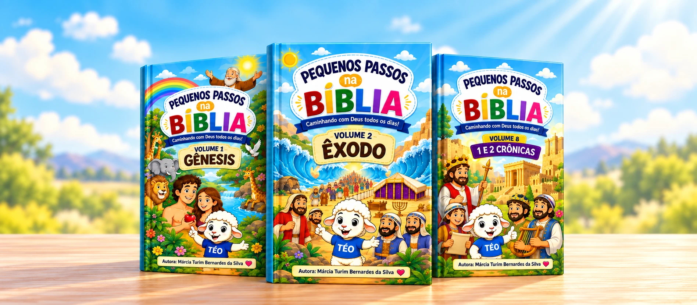
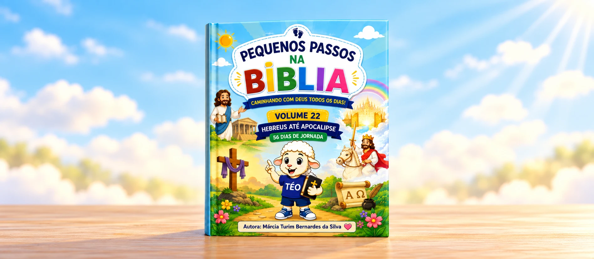

Devocional bíblico infantil · 6 a 11 anos
Ensine seu filho a abrir a Bíblia e ter o próprio tempo com Deus
Pequenos Passos na Bíblia leva a criança pelas Escrituras, livro por livro, um capítulo de cada vez. Com leitura, perguntas, oração e atividades, guiada pela ovelhinha Téo.
Um capítulo por dia. Um pequeno passo de cada vez.
Cada devocional foi pensado para a criança de 6 a 11 anos fazer com a família por perto. Ela lê, entende, ora e guarda a Palavra no coração.
Em cada volume, seu filho encontra:

Leitura bíblica
O capítulo do dia, para aprender a abrir e ler a própria Bíblia.
Versículo-chave
A frase central para memorizar e guardar no coração.

Explicação em linguagem de criança
O texto bíblico explicado de forma simples.

Perguntas de observação
Para prestar atenção no texto e entender o que leu.
Curiosidades e palavras bíblicas
Para descobrir o contexto e o significado do que está nas Escrituras.

Oração
Um momento para conversar com Deus com as próprias palavras.
Atividades de escrita
Para escrever e fixar a Palavra.

Desenho para colorir
Para aprender também com as mãos.

Conversa em família
Perguntas e desafios práticos para viver o que a Bíblia ensina.
A ovelhinha Téo acompanha a criança do começo ao fim, com dicas e ensinamentos pelo caminho.
O que muda quando seu filho cria o hábito de ler a Bíblia
Ele aprende a abrir a Bíblia e a encontrar os textos sozinho.
Ele entende o que lê, porque cada capítulo vem explicado em linguagem de criança.
Ele conhece quem Deus é e descobre Jesus em cada página das Escrituras.
Ele aprende a orar com as próprias palavras.
Ele guarda a Palavra no coração, escrevendo e memorizando os versículos.
Ele ganha uma rotina diária simples, que cabe no dia e não vira mais uma tarefa pesada.
Vocês ganham momentos de conversa e comunhão em família, com perguntas que abrem o diálogo sobre a fé.
Você tem a tranquilidade de saber que seu filho está sendo conduzido pela Palavra, e não só por histórias soltas.
O material serve para casa, igreja, célula, escola bíblica e ministério infantil.
Escolha como você quer começar

Coleção completa: 22 volumes
Todos os devocionais do Pequenos Passos na Bíblia, do começo ao fim da jornada.
- Você leva 22 volumes e paga o equivalente a 18. Economia de R$ 39,00.
- Acesso imediato
- 100% digital
- Garantia de 7 dias

1 volume
Prefere começar com um só? Escolha o volume que quiser e comece hoje.
- Acesso imediato
- 100% digital
- Garantia de 7 dias
Experimente sem risco
Compre, folheie com seu filho e faça a primeira semana da jornada. Se não for o que você esperava, é só pedir o reembolso dentro de 7 dias e devolvemos o valor pago.
Perguntas frequentes
Para qual idade é o material?
Para crianças de 6 a 11 anos. A linguagem é simples e as atividades funcionam bem nessa faixa.
Meu filho ainda não lê bem. Funciona?
Sim. Nessa idade, muitas crianças precisam de uma ajuda no começo, e os pais podem ler junto. As perguntas e a conversa em família foram pensadas para esse momento.
Como recebo o material?
O material é 100% digital. Assim que o pagamento for confirmado, você recebe o acesso no e-mail cadastrado.
Preciso imprimir?
Não é obrigatório. Dá para usar na tela, mas a criança aproveita mais quando imprime, escreve e colore.
Quantos volumes são e todos já estão prontos?
São 22 volumes e todos já estão prontos. Você recebe tudo de uma vez ao escolher a coleção completa.
Posso comprar só um volume?
Pode. Cada volume custa R$ 9,90 e você escolhe qual quer antes de finalizar. A coleção completa sai mais em conta: 12x de R$ 14,90.
Por onde começo? Preciso seguir uma ordem?
O ideal é seguir a ordem da coleção, que caminha pela Bíblia livro por livro. Mas se quiser começar por um livro específico, dá para escolher o volume que preferir.
Posso usar na igreja, na célula ou na escola bíblica?
Pode. O material foi pensado para casa, igreja, célula, escola bíblica e ministério infantil.
E se eu não gostar?
Você tem 7 dias de garantia. Se não for o que esperava, pede o reembolso e devolvemos o valor pago.
Posso ver o material antes de comprar?
Pode. Tem uma prévia com algumas páginas logo acima.